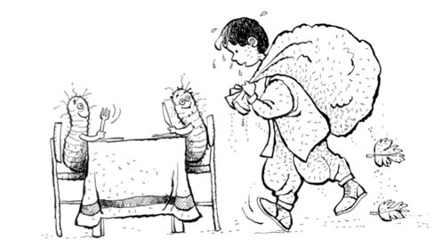

İPEK YOLU -BİR NEVİ-
Babam elindeki küçücük poşeti uzattı, “Al bunlar senin Şerif” dedi. Küçük bir torba içinde bir avuca sığacak kadar siyah küçük kurtçuk.
— Bunlar ne baba?
Babam hayatın sırrını veriyormuş gibi eğildi:
— İpek böcekleri.
— Ne yapacağım bunları?
— Besleyeceğiz yavrum. Bunlar ileride koza yapacaklar, ipek üretecekler; satarız çok para kazanırız. Dünyanın en değerli böceği!
Şimdi, bana daha önce sokak köpeğini, “Bu, dünyanın en değerli köpek cinsi: Tazı” diye yutturduğu için, ya da “Dünyanın en büyük balığı levrektir yavrum” dediği ve mahallede “Oğluuum dünyanın en büyük balığı levrek bi kerem” diye herkesle iddiaya girdiğim için çok inanasım gelmedi ama ucunda da büyük para var... Elimdeki bir avuç siyah küçücük tırtılcığa baktım.
— Ne yiyecekler baba?
— Oğlum, bunlar sadece dut yaprağı yer.
Bir anda tüm Kutluevler, Mutluevler, Hüsnügüzel çevresini, hani böyle filmlerde, bilgisayarda dijital olarak gözden geçiriyorlar ya, tıpkı öyle taradım kafamın içinde. Hani Google Maps’in aynısı. Tabii o zaman ne yaptığımı bilmiyorum, şimdi bilgisayarları görünce “Oğlum, benim beyin böyle çalışıyordu zaten!” diye sonradan çözdüm olayı. (Yalnız battım muhabbettin içine çıkamıyorum fark ettiniz siz de, beynim şöyle süper böyle süper derken. Çıkayım ben artık... Anladınız siz beni, akıllıyım yani o anlamda...)
— Tamam, baba. Ben bulurum yaprak, dedim. Ne olacak, bir avuç tırtıl!
Kutluevler’in alt tarafında bir yerde bir adamın üç tane dut ağacı var. Önce, küçük bir kutucuk ayarladım bunlara, sonra salçalı ekmeğimi yiyip çıktım dışarı, indim amcanın bahçesine. Bildiğin bahçe sahibi bir Türk; yani Allah önce bıyığı yapıyor sonra arkasına adamı takıp dünyaya yolluyor bunları. Adamın bahçesinde görmek isteyeceği son kişi, benim yaş grubumda bir erkek çocuk tabii ki.
“Ne var ulen, ne arıyon bahçenin civarında?” diye sordu adam beni görünce. “Amca, benim ipek böceklerim var, bir dut yaprağı alabilir miyim?” dedim.
Birinin bahçesinden bir şey alacağım da, izin isteyeceğim! Görülmüş şey değil ama artık ipek işine girdim, ticaret yapıyoruz, ağır olmak lazım.
Amcanın normalde bana söyleyeceği şey, “La git buradan, yürü leen!” falan gibi bir şey ama ağaçların üzerleri silme dut yaprağı, dut falan da istemiyorum, bir tane yaprak vermese harbi ayıp olacak, ben de Shrek’deki kedinin çizmesizi, gözbebekleri aynen büyük, gülümsüyorum falan...
“Al bağalım bi tane” dedi. Hemen kibarca bir tane kopardım, aynen Ömercik edasıyla teşekkür ettim.
Verdim tırtışlara yaprağı. Okula gidiyorum geliyorum, tır tır yiyorlar yaprağı. İki günde zor bitirdiler, fakat bitti bir gün işte. Ben yine gittim:
— Amca, merhaba!
Ses yok...
— Ben bir dut yaprağı daha alabilir miyim?
Sessizlik... Belli ki amca bahçeden bir şey vermeye alışık değil, fakat ben de hiç onun alışık olduğu gibi davranmıyorum; çok insani yaklaşıyorum. Kafasıyla bana bakmadan onayladı. Kaptım yaprağı.
— Teşekkür ederim amca!
Çıt yok amcadan. Verdim benim hayvanlara yaprağı. Yalnız en ufak bir sevgi ilişkisi yok böceklerle aramda. Simsiyahlar, gözler falan görünmüyor, küçücükler zaten. Bu sefer yaprak yarım günde bitti, kafayı kaldırıp bakmaya başladılar böcükler. Ben yine gittim ertesi gün, tören aynı ama bu gidişimde iki yaprak istedim (homur homur homur) aldım.
Yalnız benim ipek böcekleri -sermayem oluyorlar- büyümeye, beyazlaşmaya başladılar. Artık kafalar tepede bana bakıp yaprak bekliyorlar. Bizim bir yaprak iki oldu, üç, dört, beş, en son torbayla gittim bahçeye. Amcanın da evi orada, devamlı bahçede mübarek.
En son beni torbayla görünce, “Bu ne leyn?” dedi. Ben böceklerin büyüdüklerini, daha çok yediklerini falan söylediğimde, “Bana mı sorup aldın len böceklerini! Git başka bahçeye dadan!” dedi.
Haklı! I. Murat Camii’nin karşısındaki Kuran kursunun bahçesinde kırmızı dut ağacı var, fakat caminin imamı adamı yakalarsa ipek imal eder, o kadar yani!
— Bu sefer de alsam ama sizi bir daha rahatsız etmesem?
— La git bela mısın! Yok sana yaprak maprak, dedi.
Allah’tan küfretmedi. Bak içten söylüyorum çok gururluyumdur!
“Peki” dedim ve eve doğru yollandım. Evde bebeler aç beni bekliyorlar. Zamanla da aramızda harbiden sevgi oldu hayvanlarla, çok tatlişler! Bembeyaz oldular, büyüdüler. Yalnız acayip yiyorlar, domuzlar gibi.
Ben aslında “Alabilir miyim?” derken, “Sen mi verirsin, yoksa ben mi alayım?” anlamında söylemiştim. Şöyle açıklayayım size: Eşim Meltem’e “İkinci çocuğun zamanı geldi değil mi?” dedim, “Ben düşünmüyorum ikinciyi” dedi, “Ben ikinciyi yapacağım da, senden mi olur başkasından mı karar ver” dedim, “Olur yapalım” dedi Meltem.
Hayvanlar aç... Akşam operasyona çıktım dolayısıyla, daldım karanlıkta bahçeye, topladım iki günlük yaprak. Yediler, bitti. Ben artık akşamları çalışmaya başladım. Baban nasıl izin veriyor diyorsunuz ya, mahallenin bütün çocukları akşamları dışarıda; herkes birbirine güveniyor. Ülke cidden tertemiz, hırsız uğursuz yok, var da parmakla gösterilecek kadar az, şimdiki gibi yüzdesi bu kadar yüksek değil. En azından, “Yiyor ama çalışıyor” diye bir laf henüz duyulmamış. “Ben arkadaşlarla oynamaya çıkıyorum” diyerek çıkıp dut yapraklarını topluyorum. Fakat nasıl stres içindeyim... Adam bahçeye çıksa bittim ki kimi akşam dışarıda çay içiyor, kös kös dönüyorum.
Bu arada bizim bir yaprak, oldu sana koca torba çuval yaprak. Taşıması, bahçeden çıkarması harbiden zor. Onca yaprağı nasıl yiyorlar ama anlatamam. O günlerde stresten gözlerimin altı morardı.
Babam rahat, “Oğlum, peh peh, büyüyorlar bunlar, paraya para demeyeceğiz” falan diyor. Büyüyorlar da nasıl büyüyorlar sen bana sor...
Bir gün eve geldim, Sanem mız mız ağlıyor. O da 2. sınıfa gidiyor, sekiz yaşında, nasıl tatlı bir şey. Ben de on yaşındayım, bildiğin abiyim yani. “Ne oldu Saminem?” dedim. Yeri gösterdi; tırtıllardan biri düşmüş, ölmüş. Benim de gözler doldu.
Beraber cenaze töreni yaptık; gömdük saksıya, Fatihalarımızı okuduk mevtanın arkasından. Herkesin arkasından o kadar ağlanmaz emin olun.
Yalnız bu arada, gündüz bir ara baktım bizim dut ağaçları belirgin bir biçimde bayağı kelleşmiş; benim tırtıllar topladığım yapraklarla ağacı bayağı bitirmişler. Amca da ağaca odun dayamış bir tane, mesaj net! Ama beni hiç görmüyor, gece çalışıyorum. Nasıl stresli bir iş... Küçücük boyunla gece karanlıkta ağaç tepelerindesin. Adam o bir yaprağı verdiğine pişman, ben izin isteyip kimliğimi açık ettiğime pişman. Beni bir yerde kıstırsa kesin dövecek.
Babam bir akşam mesaiden döndü, “Oğlum, bunların koza zamanı geldi ama bunlar sadece bilmem ne çalısına koza yaparlar, o çalıdan bulmamız lazım seninle” dedi. “Nasıl yani, herhangi bir çalı olsa olmaz mı?” dedim. “Yok, bunlar hassas hayvanlar, sadece bilmem ne çalısına yaparlarmış kozalarını. Yarın seninle Uludağ’ın eteklerine yürüyelim, çalıyı bulur geliriz” dedi.
Ertesi sabah kahvaltıdan sonra babamla ormanın içine yürüdük. Yabani meyveler toplayıp yedik; hepsi birbirinden ekşi gürenler, küçük elmalar, dağ çilekleri. Uzun kuyruklu kıpkızıl bir de tilkicik gördük. Gizli bir pınardan su içtik. Çalıdan da bulup kestik üç dört dal kocaman, sürükleye sürükleye eve getirdik, salona koyduk.
Benim yaşıtlarım bilirler; misafir odası evin en güzel odasıdır. En güzel eşyalar, çeyizler, şu bu misafir odasında olur. Kullanılmazdı evlerde, misafire aitti orası. Çoğu zaman kapalı olurdu zaten, ancak misafir geldiğinde odayı onlarla beraber görme şansına sahip olurdun. Normal zamanda çoluğu çocuğu salsan oraya, pırlanta dükkânına tavuk salmışsın gibi olur; anladınız siz onu! Ben anlatamamış olabilirim tamam, ama siz anladınız işte uzatmayın.
Çalıların sıcakta durmaları gerektiği ve evde sıcak başka bir yer olmadığı için misafir odasına koyduk onları. Ha bir de ortamın sessiz olması gerekiyormuş, yoksa stresten koza yapamıyorlarmış böcekler. Normalde o salona çalı konması olacak bir şey değil ama babamların sülalede en akıllıları ağaca bağlı olduğu için ve annem de benim bu ipek böceklerine olan sevgimi bildiği için müsaade etti. Salonun ortasında çalılar, etrafında benim böcükler, evde çıt çıkarana “Sessiz olun hışşşt!” diyen ben.
Hayvancıklar sarardı soldu... Onlar sarardıkça benim yüzüme renk geldi, çünkü yaprak yemeyi bıraktılar. Çalılara yavaş yavaş tırmandılar.
Salona girip bazen sessizce onları izledim. Salonda Çin tapınaklarının havası var bu arada; perdeler kapalı, güneşten de rahatsız oluyorlarmış çünkü. Yavaş yavaş kozalarını ördüler, bembeyaz yumurtalar yaptılar kendilerine.
O sahneyi görmek bile mucizeydi benim için. Babamla memnun, birbirimize baktık.
Bir hafta sonu kozaları topladık, küçük bir sepete koyduk, otobüse binip doğru Koza Han’a -ipek ticaretinin merkezi- gittik. Bir sepet dolusu ipek kozası elimde...
“Ne yapacaksın parayla?” dedi babam yolda. “Bisiklet alırım” dedim.
Bir tüccara gösterdi babam sepeti, “Oğlum yetiştirdi” dedi. Adam baktı bana, “Para etmez bu, etse etse şu kadar eder” dedi. O dediği parayı ben zaten çiklet satıp kazanabiliyorum. “Satmam o paraya” dedim.
Birkaç dükkân daha dolaştık, hep aynı para. Ahmet olsa rakamı hatırlar, ben şehri zor hatırlıyorum. “Satmayalım” dedim babama, “o kadar emek verdik.” “Doğru” dedi babam.
Bindik otobüse dönüyoruz. “Zaten ipek yapmak için kaynar kazana atıyorlar kozaları, sonra yapıyorlar ipeği” dedi babam. Yalnız o ana kadar hiç söylemiyor bana bu durumu; para iyi olursa caymayayım diye... Ölen bir tanesinin arkasından Sanem’le nasıl ağladığımızı biliyor. Ben bir sevindim.
Getirdik salona koyduk kozaları. Her gün gidip gidip baktım. Gün geldi, kozalar yerlerinde hafif hafif kıpırdadılar, sonra pıtır pıtır açıldılar. İçinden çıkan kelebekler bana ve Sanem’e minnettar minnettar baktılar. Bursa’daki ilk Çin tapınağının penceresinden kanat çırparak -kesinlikle bana da kanat sallayarak- uçup gittiler.
Onlarla birlikte benim de tüm ticari yatırımım, emeklerim, gece fazla mesailerim de uçup gitti. Eminim aralarında daha tırtılken birbirini sevenler varsa çıkışta buluşup yuva kurmuşlardır.
Şimdi Bursa civarında gökyüzünde, çiçeklerin üstünde eğer uçan bir kelebek görürseniz, bilin ki onun onlarca kuşak önceki atalarını ben yetiştirdim, arkalarından küçücük kalbimle el salladım.
Eminim mutludurlar. Ve inşallah o adamın bahçesindeki dut ağaçlarına dadanmışlardır.